library(tidyverse) # Data wrangling and plotting
library(ggdist) # Easy and aesthetic plotting of distributions
library(ggExtra) # Adding marginal distributions for 2d plots
library(tidybayes) # Tidy processing of Bayesian models and extraction of MCMC chains
library(bayestestR) # Nice plots for brms models
library(brms) # Bayesian modeling and posterior estimation with MCMC using Stan
library(lme4) # fitting frequentist hierarchical linear models
library(lmerTest) # fitting frequentist hierarchical linear models
library(parameters) # clean extraction of model parameters
library(distributional) # Plotting of theoretical distributions (for likelihood functions plots)Setup
Loading some packages for demonstrations and analysis:
Introduction
This is the second part of “Bayesian modeling for Psychologists”, see part 1 here. In this post I will show how to model some more complicated regression models, more similar to the ones you will fit in you research.
Gaussian regression
OLS Linear model
In the first part we looked at a simple linear regression model with a categorical predictor (a t-test). Let’s look at linear regression with one continuous predictor:
iris <- iris
head(iris) Sepal.Length Sepal.Width Petal.Length Petal.Width Species
1 5.1 3.5 1.4 0.2 setosa
2 4.9 3.0 1.4 0.2 setosa
3 4.7 3.2 1.3 0.2 setosa
4 4.6 3.1 1.5 0.2 setosa
5 5.0 3.6 1.4 0.2 setosa
6 5.4 3.9 1.7 0.4 setosaProbably some relationship between Petal width and length:
ols_model <- lm(Petal.Length ~ Petal.Width, data = iris)model_parameters(ols_model) |> insight::print_html()| Parameter | Coefficient | SE | 95% CI | t(148) | p |
|---|---|---|---|---|---|
| (Intercept) | 1.08 | 0.07 | (0.94, 1.23) | 14.85 | < .001 |
| Petal Width | 2.23 | 0.05 | (2.13, 2.33) | 43.39 | < .001 |
Maybe some interaction with species?
ols_model_int <- lm(Petal.Length ~ Petal.Width * Species, data = iris)model_parameters(ols_model_int) |> insight::print_html()| Parameter | Coefficient | SE | 95% CI | t(144) | p |
|---|---|---|---|---|---|
| (Intercept) | 1.33 | 0.13 | (1.07, 1.59) | 10.14 | < .001 |
| Petal Width | 0.55 | 0.49 | (-0.42, 1.52) | 1.12 | 0.267 |
| Species (versicolor) | 0.45 | 0.37 | (-0.28, 1.19) | 1.21 | 0.227 |
| Species (virginica) | 2.91 | 0.41 | (2.11, 3.72) | 7.17 | < .001 |
| Petal Width × Species (versicolor) | 1.32 | 0.56 | (0.23, 2.42) | 2.38 | 0.019 |
| Petal Width × Species (virginica) | 0.10 | 0.52 | (-0.94, 1.14) | 0.19 | 0.848 |
We get the following model:
\[ Petal.Length=1.33+0.55 \cdot Petal.Width+0.45 \cdot SpeciesVersicolor+2.91 \cdot SpeciesVirginica+1.32 \cdot Petal.Width \cdot SpeciesVersicolor+0.1 \cdot Petal.Width \cdot SpeciesVirginica \]
In order for the intercept to have practical meaning we need to center the predictor Petal.Width:
iris$Petal.Width_c <- scale(iris$Petal.Width, scale = FALSE)[,1]Fitting the model again:
ols_model_centered <- lm(Petal.Length ~ Petal.Width_c * Species, data = iris)Now the intercept will be the predicted Petal.Length for Setosa flowers with mean Petal.Width:
model_parameters(ols_model_centered) |> insight::print_html()| Parameter | Coefficient | SE | 95% CI | t(144) | p |
|---|---|---|---|---|---|
| (Intercept) | 1.98 | 0.47 | (1.05, 2.91) | 4.22 | < .001 |
| Petal Width c | 0.55 | 0.49 | (-0.42, 1.52) | 1.12 | 0.267 |
| Species (versicolor) | 2.04 | 0.47 | (1.10, 2.98) | 4.31 | < .001 |
| Species (virginica) | 3.03 | 0.50 | (2.05, 4.02) | 6.10 | < .001 |
| Petal Width c × Species (versicolor) | 1.32 | 0.56 | (0.23, 2.42) | 2.38 | 0.019 |
| Petal Width c × Species (virginica) | 0.10 | 0.52 | (-0.94, 1.14) | 0.19 | 0.848 |
The model is:
\[ Petal.Length=1.98+0.55 \cdot Petal.Width+2.04 \cdot SpeciesVersicolor+3.03 \cdot SpeciesVirginica+1.32 \cdot Petal.Width \cdot SpeciesVersicolor+0.1 \cdot Petal.Width \cdot SpeciesVirginica \]
Visualization
f_plot <- iris |>
ggplot(aes(x = Petal.Width, y = Petal.Length, color = Species, fill = Species)) +
geom_point(show.legend = F) +
geom_smooth(method = "lm") +
scale_fill_manual(values = c("#edae49", "#d1495b", "#00798c")) +
scale_color_manual(values = c("#edae49", "#d1495b", "#00798c")) +
blog_theme
f_plot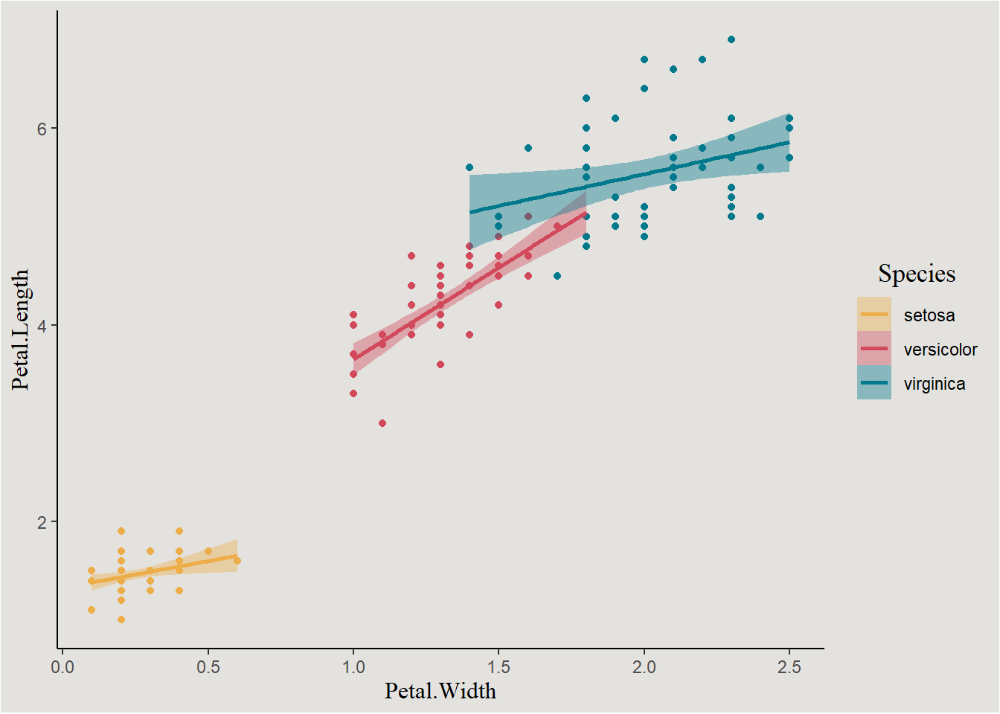
Bayesian linear model
In order to fit the same model in a Bayesian way, we will first need to define the prior distribution. In this case there are a total of 7 parameters.
Let’s verify this with the get_prior() function:
get_prior(formula = Petal.Length ~ Petal.Width_c * Species,
data = iris,
family = gaussian()) prior class coef group resp
(flat) b
(flat) b Petal.Width_c
(flat) b Petal.Width_c:Speciesversicolor
(flat) b Petal.Width_c:Speciesvirginica
(flat) b Speciesversicolor
(flat) b Speciesvirginica
student_t(3, 4.3, 2.5) Intercept
student_t(3, 0, 2.5) sigma
dpar nlpar lb ub source
default
(vectorized)
(vectorized)
(vectorized)
(vectorized)
(vectorized)
default
0 defaultI will model some positive relationship between length and width, a relatively weakly-informed prior on the intercept, and a very wide prior on the not-interesting sigma parameter. On the other parameters I will have an “agnostic” zero-centered Normal distribution:
student-t prior
The student-t distribution is symmetrical like the Gaussian distribution, but it has thicker “tails”. This allows the model to explore wider area of the possible parameter value space.
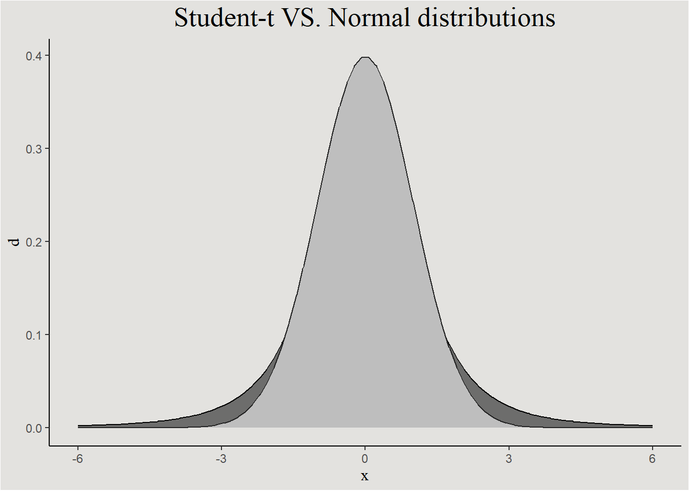
prior_iris <- set_prior("normal(1, 3)", coef = "Petal.Width_c") +
set_prior("normal(0, 3)", coef = "Speciesversicolor") +
set_prior("normal(0, 3)", coef = "Speciesvirginica") +
set_prior("normal(0, 3)", coef = "Petal.Width_c:Speciesversicolor") +
set_prior("normal(0, 3)", coef = "Petal.Width_c:Speciesvirginica") +
set_prior("normal(0, 3)", class = "Intercept") +
set_prior("exponential(0.001)", class = "sigma")Exponential prior
Because variances are strictly positive, the exponential distribution is a common choice for it (and other variance parameters):
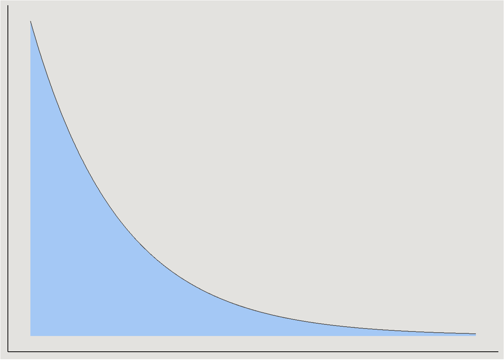
Fitting a model:
bayes_model_iris <- brm(Petal.Length ~ Petal.Width_c * Species,
data = iris,
family = gaussian(),
prior = prior_iris,
cores = 4,
chains = 4,
iter = 4000,
backend = "cmdstanr")model_parameters(bayes_model_iris, centrality = "all") |> insight::print_html()| Model Summary | |||||||
|---|---|---|---|---|---|---|---|
| Parameter | Median | Mean | MAP | 95% CI | pd | Rhat | ESS |
| Fixed Effects | |||||||
| (Intercept) | 2.14 | 2.14 | 2.15 | (1.24, 3.04) | 100% | 1.002 | 1473.00 |
| Petal.Width_c | 0.71 | 0.71 | 0.71 | (-0.22, 1.65) | 93.39% | 1.002 | 1466.00 |
| Speciesversicolor | 1.89 | 1.88 | 1.90 | (0.98, 2.79) | 100% | 1.002 | 1507.00 |
| Speciesvirginica | 2.87 | 2.87 | 2.85 | (1.92, 3.81) | 100% | 1.002 | 1676.00 |
| Petal.Width_c:Speciesversicolor | 1.16 | 1.16 | 1.16 | (0.11, 2.22) | 98.38% | 1.002 | 1712.00 |
| Petal.Width_c:Speciesvirginica | -0.05 | -0.05 | -0.04 | (-1.07, 0.97) | 54.23% | 1.002 | 1618.00 |
| Sigma | |||||||
| sigma | 0.36 | 0.36 | 0.36 | (0.32, 0.41) | 100% | 1.001 | 3753.00 |
model_parameters(ols_model_centered)Parameter | Coefficient | SE | 95% CI | t(144) | p
-------------------------------------------------------------------------------------------
(Intercept) | 1.98 | 0.47 | [ 1.05, 2.91] | 4.22 | < .001
Petal Width c | 0.55 | 0.49 | [-0.42, 1.52] | 1.12 | 0.267
Species [versicolor] | 2.04 | 0.47 | [ 1.10, 2.98] | 4.31 | < .001
Species [virginica] | 3.03 | 0.50 | [ 2.05, 4.02] | 6.10 | < .001
Petal Width c × Species [versicolor] | 1.32 | 0.56 | [ 0.23, 2.42] | 2.38 | 0.019
Petal Width c × Species [virginica] | 0.10 | 0.52 | [-0.94, 1.14] | 0.19 | 0.848 Convergence metrics looking good, we can proceed to interpret the posterior.
Visualization
Visualizing a Bayesian regression model can be done in several ways:
Visualizing regression parameters themselves
Like we saw in Part 1, we can directly inspect the marginal posteriors of the coefficients themselves. First we will extract them into a data.frame (and rename interaction terms for convenience):
posterior_iris <- spread_draws(bayes_model_iris, b_Intercept, b_Petal.Width_c, b_Speciesversicolor, b_Speciesvirginica, !!sym("b_Petal.Width_c:Speciesversicolor"), !!sym("b_Petal.Width_c:Speciesvirginica"), sigma) |>
rename(b_Petal.WidthXSpeciesversicolor = !!sym("b_Petal.Width_c:Speciesversicolor"),
b_Petal.WidthXSpeciesvirginica = !!sym("b_Petal.Width_c:Speciesvirginica"))head(posterior_iris)# A tibble: 6 × 10
.chain .iteration .draw b_Intercept b_Petal.Width_c b_Speciesversicolor
<int> <int> <int> <dbl> <dbl> <dbl>
1 1 1 1 1.82 0.393 2.18
2 1 2 2 1.56 0.160 2.39
3 1 3 3 1.61 0.102 2.34
4 1 4 4 1.69 0.231 2.30
5 1 5 5 1.67 0.243 2.29
6 1 6 6 1.71 0.250 2.26
# ℹ 4 more variables: b_Speciesvirginica <dbl>,
# b_Petal.WidthXSpeciesversicolor <dbl>,
# b_Petal.WidthXSpeciesvirginica <dbl>, sigma <dbl>In the output of spread_draws we get 10 columns:
* .chain = the index of the MCMC chain (4 total in our case).
* .iteration = the index of the draw within it’s chain (each chain is 500 samples long).
* .draw = the overall index of the draw (2000 samples in the posterior overall).
* parameter_name - draw’s value for each parameter.
Plotting the marginal posteriors:
posterior_iris |>
pivot_longer(cols = c(b_Intercept, b_Petal.Width_c, b_Speciesversicolor, b_Speciesvirginica, b_Petal.WidthXSpeciesversicolor, b_Petal.WidthXSpeciesvirginica),
names_to = "variable") |>
ggplot(aes(x = value, y = variable, fill = after_stat(x > 0))) +
stat_halfeye() +
geom_vline(xintercept = 0, linetype = "dashed") +
scale_fill_manual(values = c("#d1495b", "#00798c"), labels = c("Negative", "Positive")) +
scale_x_continuous(breaks = seq(-4, 4, 0.5), labels = seq(-4, 4, 0.5)) +
labs(fill = "Direction of Effect") +
blog_theme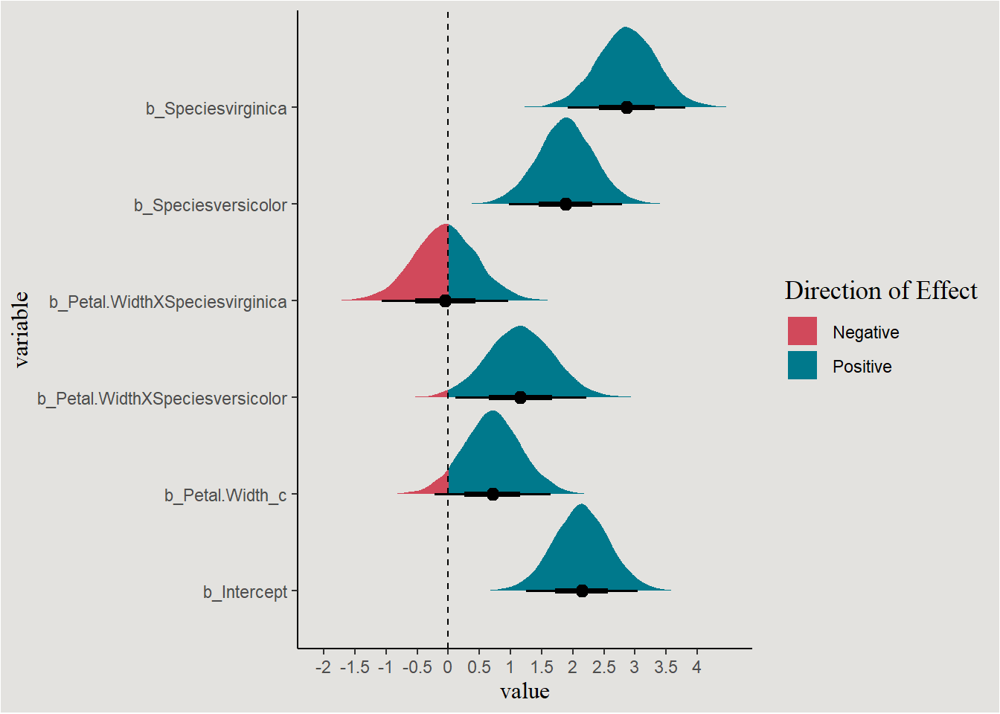
Visualizing the regression line(s)
Marginal posteriors are nice, but are not a visualization of the model itself. Like in the frequentist model, we would like to see the regression line itself. How to do it?
The regression line is a line of conditional means:
\[ \mu|X=\beta X \]/
But, we have 4000 samples from the posterior containing possible values for each parameter \(\beta_i\) - a.k.a a distribution. So for each possible row in the data set we will have a distribution (4000 values) of predicted conditional means \(\mu|X\):
Uncertainty
Why not summarizing the MCMC chains when inferring or visualizing a Bayesian model?
A key aspect of statistical modeling and visualization is the measurement of uncertainty in the data. In the frequentist world, this is represented with standard errors and confidence intervals.
In the Bayesian world uncertainty is represented by the MCMC samples themselves, creating the posterior distribution. For that reason we will make calculations and visualizations with the MCMC samples and not with their summaries.
Creating a data.frame of independent variables (a design matrix) for creating predictions from the posterior:
new_data <- expand_grid(Petal.Width_c = seq(min(iris$Petal.Width_c), max(iris$Petal.Width_c), length=200),
Species = unique(iris$Species))
head(new_data)# A tibble: 6 × 2
Petal.Width_c Species
<dbl> <fct>
1 -1.10 setosa
2 -1.10 versicolor
3 -1.10 virginica
4 -1.09 setosa
5 -1.09 versicolor
6 -1.09 virginica We actually need to remove some rows from this data frame. This is because not all values of Petal.Width appear in all species. The range of observed widths is different between different species.
range_setosa <- c(min(iris$Petal.Width_c[iris$Species == "setosa"]), max(iris$Petal.Width_c[iris$Species == "setosa"]))
range_versicolor <- c(min(iris$Petal.Width_c[iris$Species == "versicolor"]), max(iris$Petal.Width_c[iris$Species == "versicolor"]))
range_virginica <- c(min(iris$Petal.Width_c[iris$Species == "virginica"]), max(iris$Petal.Width_c[iris$Species == "virginica"]))
new_data <- new_data |>
mutate(extrapolation = case_when((Species == "setosa" & Petal.Width_c < range_setosa[1]) | (Species == "setosa" & Petal.Width_c > range_setosa[2]) ~ TRUE,
(Species == "versicolor" & Petal.Width_c < range_versicolor[1]) | (Species == "versicolor" & Petal.Width_c > range_versicolor[2]) ~ TRUE,
(Species == "virginica" & Petal.Width_c < range_virginica[1]) | (Species == "virginica" & Petal.Width_c > range_virginica[2]) ~ TRUE,
.default = FALSE)) |>
filter(!extrapolation)Calculating the distribution of conditional means for the second row: \(Petal.Widthc=-1.099333; \ Species=versicolor\):
posterior_iris |>
mutate(conditional_mean = b_Intercept + b_Petal.Width_c * -1.099333 + b_Speciesversicolor + b_Petal.WidthXSpeciesversicolor * -1.099333) |>
head()# A tibble: 6 × 11
.chain .iteration .draw b_Intercept b_Petal.Width_c b_Speciesversicolor
<int> <int> <int> <dbl> <dbl> <dbl>
1 1 1 1 1.82 0.393 2.18
2 1 2 2 1.56 0.160 2.39
3 1 3 3 1.61 0.102 2.34
4 1 4 4 1.69 0.231 2.30
5 1 5 5 1.67 0.243 2.29
6 1 6 6 1.71 0.250 2.26
# ℹ 5 more variables: b_Speciesvirginica <dbl>,
# b_Petal.WidthXSpeciesversicolor <dbl>,
# b_Petal.WidthXSpeciesvirginica <dbl>, sigma <dbl>, conditional_mean <dbl>posterior_iris |>
mutate(conditional_mean = b_Intercept + b_Petal.Width_c * -1.099333 + b_Speciesversicolor + b_Petal.WidthXSpeciesversicolor * -1.099333) |>
ggplot(aes(y = conditional_mean)) +
stat_slab(fill = "#d1495b", color = "gray34") +
labs(y = expression(mu)) +
blog_theme +
theme(axis.title.x = element_blank(),
axis.text.x = element_blank(),
axis.ticks.x = element_blank())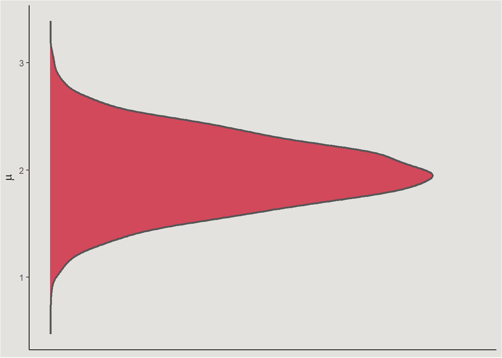
Calculating this for several rows gives us several more distributions of conditional means. I here use values realistic for each species to avoid extrapolation.
width_values_setosa <- c(-1, -0.9, -0.7)
width_values_versicolor <- c(0, 0.1, 0.3)
width_values_virginica <- c(0.2, 0.8, 1.1)
posterior_iris |>
mutate(conditionalmean_1_setosa = b_Intercept + b_Petal.Width_c * width_values_setosa[1],
conditionalmean_2_setosa = b_Intercept + b_Petal.Width_c * width_values_setosa[2],
conditionalmean_3_setosa = b_Intercept + b_Petal.Width_c * width_values_setosa[3],
conditionalmean_1_versicolor = b_Intercept + b_Petal.Width_c * width_values_versicolor[1] + b_Speciesversicolor + b_Petal.WidthXSpeciesversicolor * width_values_versicolor[1],
conditionalmean_2_versicolor = b_Intercept + b_Petal.Width_c * width_values_versicolor[2] + b_Speciesversicolor + b_Petal.WidthXSpeciesversicolor * width_values_versicolor[2],
conditionalmean_3_versicolor = b_Intercept + b_Petal.Width_c * width_values_versicolor[3] + b_Speciesversicolor + b_Petal.WidthXSpeciesversicolor * width_values_versicolor[3],
conditionalmean_1_virginica = b_Intercept + b_Petal.Width_c * width_values_virginica[1] + b_Speciesvirginica + b_Petal.WidthXSpeciesvirginica * width_values_virginica[1],
conditionalmean_2_virginica = b_Intercept + b_Petal.Width_c * width_values_virginica[2] + b_Speciesvirginica + b_Petal.WidthXSpeciesvirginica * width_values_virginica[2],
conditionalmean_3_virginica = b_Intercept + b_Petal.Width_c * width_values_virginica[3] + b_Speciesvirginica + b_Petal.WidthXSpeciesvirginica * width_values_virginica[3]) |>
pivot_longer(cols = c(conditionalmean_1_setosa, conditionalmean_2_setosa, conditionalmean_3_setosa,
conditionalmean_1_versicolor, conditionalmean_2_versicolor, conditionalmean_3_versicolor,
conditionalmean_1_virginica, conditionalmean_2_virginica, conditionalmean_3_virginica),
names_to = c("junk", "index", "Species"),
names_sep = "_") |>
mutate(index = case_when(index == 1 & Species == "setosa" ~ width_values_setosa[1],
index == 2 & Species == "setosa" ~ width_values_setosa[2],
index == 3 & Species == "setosa" ~ width_values_setosa[3],
index == 1 & Species == "versicolor" ~ width_values_versicolor[1],
index == 2 & Species == "versicolor" ~ width_values_versicolor[2],
index == 3 & Species == "versicolor" ~ width_values_versicolor[3],
index == 1 & Species == "virginica" ~ width_values_virginica[1],
index == 2 & Species == "virginica" ~ width_values_virginica[2],
index == 3 & Species == "virginica" ~ width_values_virginica[3])) |>
ggplot(aes(x = index, y = value, fill = Species)) +
stat_slab(color = "gray33", linewidth = 0.5) +
scale_fill_manual(values = c("#edae49", "#d1495b", "#00798c")) +
labs(x = "Petal.Width", y = expression(mu)) +
blog_theme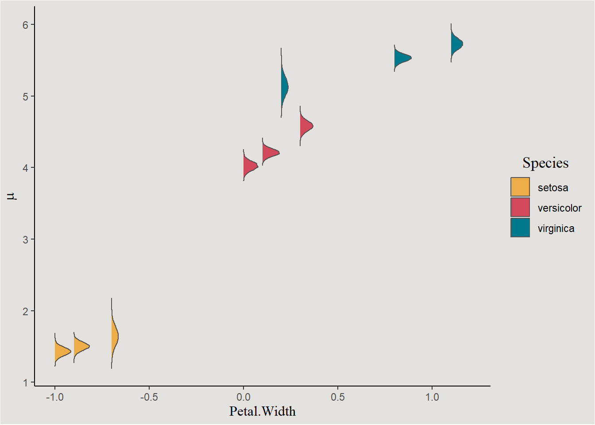
We can use the add_linpred_draws() function from the awesome tidybayes package (Kay 2020) in order to do this thing for all values of X, and finally plot the regression line with the credible interval around it:
new_data |>
add_linpred_draws(bayes_model_iris) |>
ggplot(aes(x = Petal.Width_c, y = .linpred, fill = Species, color = Species)) +
geom_point(data = iris, aes(y = Petal.Length, color = Species), show.legend = F) +
stat_lineribbon(.width = c(0.80, 0.85, 0.97), alpha = 0.7) +
scale_fill_manual(values = c("#edae49", "#d1495b", "#00798c")) +
scale_color_manual(values = c("#edae49", "#d1495b", "#00798c")) +
labs(y = expression(mu), fill = "Species", title = "80%, 85% and 97% Credible Intervals") +
guides(color = "none") +
blog_theme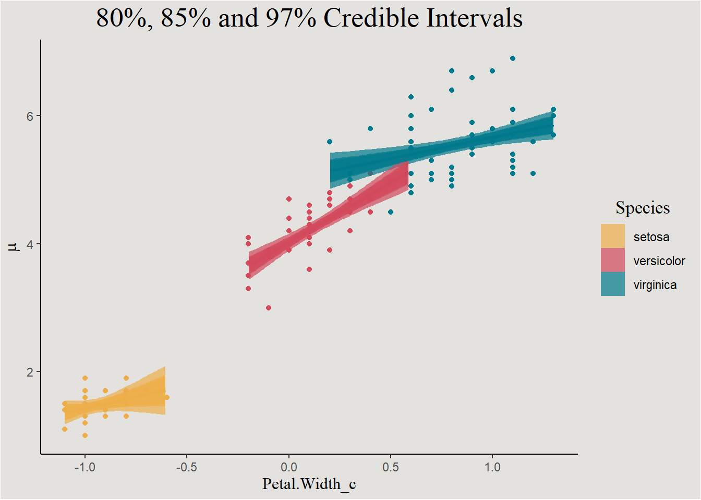
This is similar to the frequentist confidence interval, just remember that these interval actually represents 80%, 85%, and 97% of regression lines.
I think that a better way of visualizing uncertainty is by plotting the individual line themselves. Each draw represents a different regression line, plotting them all will give a nice uncertainty visualization:
new_data <- new_data |>
select(-extrapolation) |>
add_linpred_draws(bayes_model_iris, ndraws = 44, seed = 14)We can look at individual draws:
new_data |>
filter(.draw == 14) |>
ggplot(aes(x = Petal.Width_c, y = .linpred, color = Species)) +
geom_line(linewidth = 1) +
geom_point(data = iris, aes(x = Petal.Width_c, y = Petal.Length, color = Species), inherit.aes = F, show.legend = F) +
scale_color_manual(values = c("#edae49", "#d1495b", "#00798c")) +
labs(y = "Petal.Length", title = "Draw number 14") +
blog_theme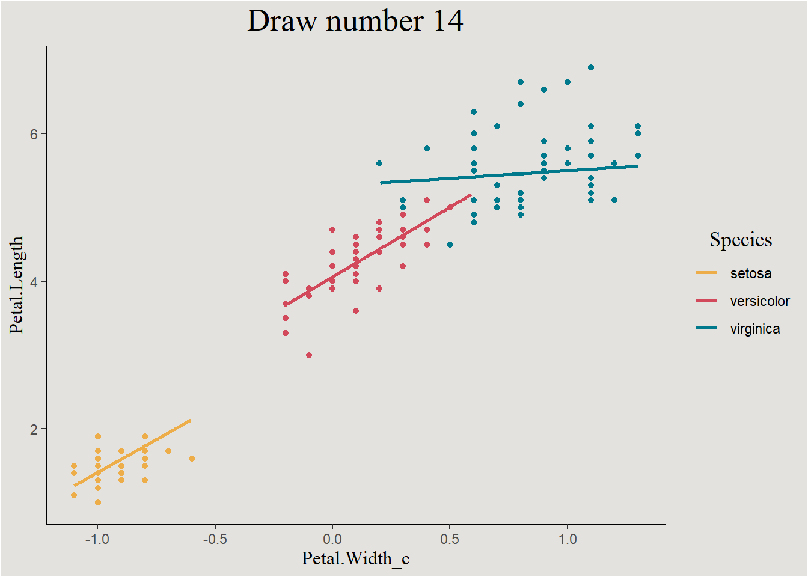
Or we can group by draw index and look at all the lines:
new_data |>
ggplot(aes(x = Petal.Width_c, y = .linpred, group = interaction(.draw, Species), color = Species)) +
geom_point(data = iris, aes(x = Petal.Width_c, y = Petal.Length, color = Species), inherit.aes = F, show.legend = F) +
geom_line(alpha = 0.4) +
scale_fill_manual(values = c("#edae49", "#d1495b", "#00798c")) +
scale_color_manual(values = c("#edae49", "#d1495b", "#00798c")) +
labs(y = "Petal.Length") +
blog_theme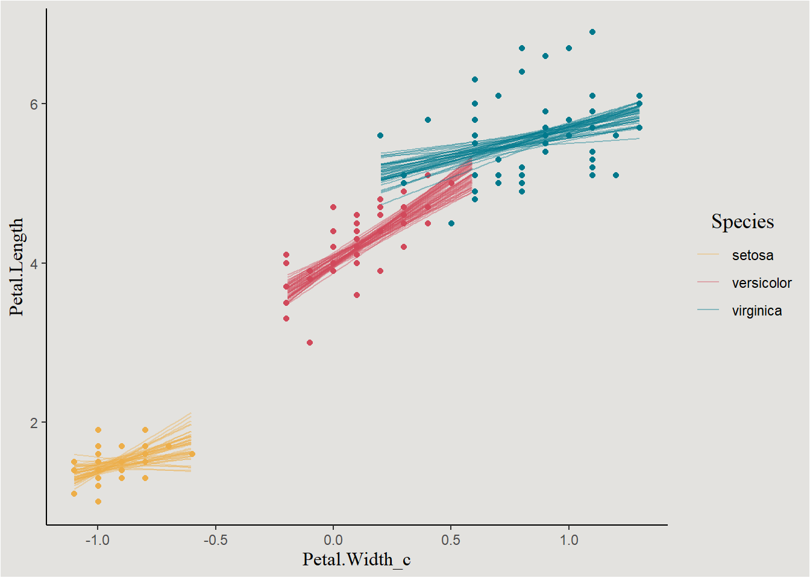
Hierarchical Linear Models (Mixed Effects Linear Models)
Hierarchical linear regression models, or Mixed effects linear models are very popular in Psychology due to the fact that data in the field tends to be hierarchical (e.g. repeated measures of participants, participants nested in some larger groups, etc…). Because this post is already quite long, I will assume you have some knowledge about hierarchical structure, fixed and random effects and model estimation.
Luckily for us, brms is more then capable at estimating mixed effects models. It even has the lme4/nlme syntax in the logo!

Let’s look at the classic sleepstudy dataset containing “The average reaction time per day (in milliseconds) for subjects in a sleep deprivation study”.
sleep <- sleepstudy
glimpse(sleep)Rows: 180
Columns: 3
$ Reaction <dbl> 249.5600, 258.7047, 250.8006, 321.4398, 356.8519, 414.6901, 3…
$ Days <dbl> 0, 1, 2, 3, 4, 5, 6, 7, 8, 9, 0, 1, 2, 3, 4, 5, 6, 7, 8, 9, 0…
$ Subject <fct> 308, 308, 308, 308, 308, 308, 308, 308, 308, 308, 309, 309, 3…sleep |>
ggplot(aes(x = Days, y = Reaction)) +
geom_point() +
geom_smooth(method = "lm", fill = "#d1495b", color = "#5D001E") +
scale_x_continuous(breaks = seq(0, 9, 1), labels = seq(0, 9, 1)) +
facet_wrap(~Subject) +
blog_theme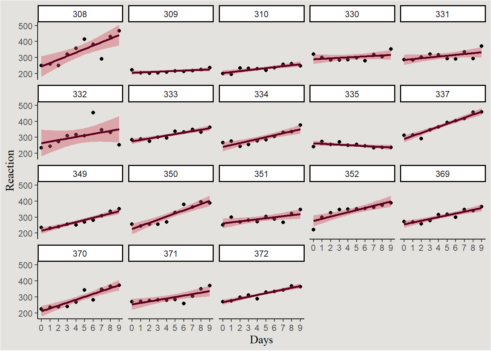
Full model for predicting reaction time can be:
\[ ReactionTime \sim N(\mu, \sigma^2) \]
And:
Level 1: Reaction time of subject \(i\) in day \(j\) is:/ \[ RT_{ij}=\beta_{0i}+\beta_{1i} \cdot Days_j +e_{ij} \]
Level 2 (random offset of coefficients for subject):/ \[ \beta_{0i}=\gamma_{00}+\tau_{0i} \]
\[ \beta_{1i}=\gamma_{10}+\tau_{1i} \]
Where:
\[ \begin{bmatrix} \beta_0 \cr \beta_1 \end{bmatrix} \sim MVN(\begin{bmatrix} \gamma_{00} \cr \gamma_{10} \end{bmatrix},\begin{bmatrix} \tau_0^2 & \tau_0\tau_1\rho_{01} \cr \tau_1\tau_0\rho_{01} & \tau_1^2 \end{bmatrix}) \]
And \(\rho_{01}\) is the correlation coefficient between random intercepts and slopes.
Maximum Likelihood Estimation
Fitting this model with the frequentist ML method:
sleep_model_ml <- lmer(Reaction ~ 1 + Days + (1 + Days | Subject),
data = sleep)Using the sjPlot::tab_model() function to produce a nice summarized statistics of mixed models:
sjPlot::tab_model(sleep_model_ml)| Reaction | |||
|---|---|---|---|
| Predictors | Estimates | CI | p |
| (Intercept) | 251.41 | 237.94 – 264.87 | <0.001 |
| Days | 10.47 | 7.42 – 13.52 | <0.001 |
| Random Effects | |||
| σ2 | 654.94 | ||
| τ00 Subject | 612.10 | ||
| τ11 Subject.Days | 35.07 | ||
| ρ01 Subject | 0.07 | ||
| ICC | 0.72 | ||
| N Subject | 18 | ||
| Observations | 180 | ||
| Marginal R2 / Conditional R2 | 0.279 / 0.799 | ||
Bayesian Estimation
How many parameters? we have 2 fixed effects (intercept and slope), 3 random effects (random intercept, random slope and their correlation), and sigma - A total of 6 parameters.
get_prior(formula = Reaction ~ 1 + Days + (1 + Days | Subject),
data = sleep,
family = gaussian()) prior class coef group resp dpar nlpar lb ub
(flat) b
(flat) b Days
lkj(1) cor
lkj(1) cor Subject
student_t(3, 288.7, 59.3) Intercept
student_t(3, 0, 59.3) sd 0
student_t(3, 0, 59.3) sd Subject 0
student_t(3, 0, 59.3) sd Days Subject 0
student_t(3, 0, 59.3) sd Intercept Subject 0
student_t(3, 0, 59.3) sigma 0
source
default
(vectorized)
default
(vectorized)
default
default
(vectorized)
(vectorized)
(vectorized)
defaultPrior elicitation
prior_sleep <- set_prior("normal(10, 4)", coef = "Days") + # RT should increase with continued sleep deprivation
set_prior("exponential(1)", class = "sd") + # setting a prior on all random variances at once
set_prior("exponential(0.01)", class = "sigma")Model estimation
bayes_model_sleep <- brm(formula = Reaction ~ 1 + Days + (1 + Days | Subject),
data = sleep,
family = gaussian(),
prior = prior_sleep,
chains = 4,
cores = 4,
iter = 2000,
backend = "cmdstanr")As our models get more complicated, the posterior distribution gets more hard for the MCMC sampler to sample from. That can result in low ECC and/or high Rhat. One solution can be simply increasing the length of each MCMC chain! this change to model definition doesn’t require compiling the Stan code again, use the update() function instead:
bayes_model_sleep <- update(bayes_model_sleep, iter = 9000)model_parameters(bayes_model_sleep, centrality = "all", effects = "all") |> insight::print_html()| Model Summary | |||||||
|---|---|---|---|---|---|---|---|
| Parameter | Median | Mean | MAP | 95% CI | pd | Rhat | ESS |
| Fixed Effects | |||||||
| (Intercept) | 251.44 | 251.44 | 251.58 | (243.45, 259.61) | 100% | 1.000 | 18190.00 |
| Days | 10.38 | 10.37 | 10.47 | (7.53, 13.22) | 100% | 1.000 | 12965.00 |
| Sigma | |||||||
| sigma | 28.66 | 28.72 | 28.59 | (25.51, 32.32) | 100% | 1.000 | 14323.00 |
| Random Effects Variances | |||||||
| SD (Intercept: Subject) | 2.58 | 3.57 | 0.16 | (0.06, 11.71) | 100% | 1.000 | 4650.00 |
| SD (Days: Subject) | 5.75 | 5.82 | 5.64 | (3.94, 8.08) | 100% | 1.000 | 6902.00 |
| Cor (Intercept~Days: Subject) | 0.59 | 0.46 | 0.96 | (-0.74, 0.98) | 84.40% | 1.001 | 1453.00 |
Extracting MCMC draws:
posterior_sleep <- spread_draws(bayes_model_sleep, b_Intercept, b_Days, sd_Subject__Intercept, sd_Subject__Days, cor_Subject__Intercept__Days)The parameters themselves
posterior_sleep |>
ggplot(aes(x = b_Intercept, fill = "#d1495b")) +
stat_slab(color = "gray34") +
guides(color = "none", fill = "none") +
labs(title = "Intercept", y = NULL, x = NULL) +
scale_x_continuous(breaks = seq(230, 270, 5), labels = seq(230, 270, 5)) +
blog_theme +
theme(axis.text.y = element_blank(),
axis.ticks.y = element_blank())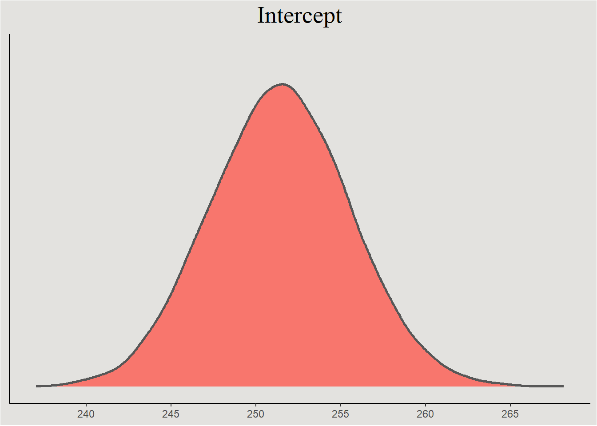
posterior_sleep |>
ggplot(aes(x = b_Days, fill = "#d1495b")) +
stat_slab(color = "gray34") +
guides(color = "none", fill = "none") +
labs(title = "b_Days", y = NULL, x = NULL) +
scale_x_continuous(breaks = seq(5, 17, 1), labels = seq(5, 17, 1)) +
blog_theme +
theme(axis.text.y = element_blank(),
axis.ticks.y = element_blank())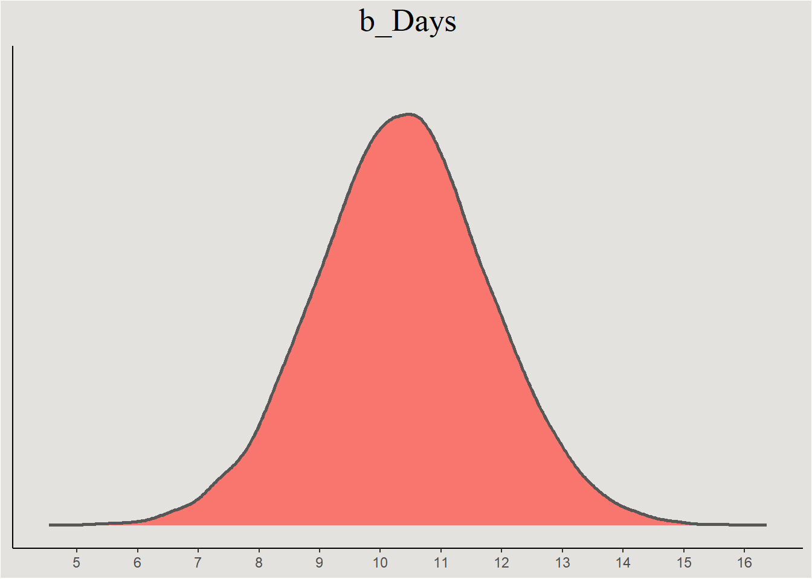
posterior_sleep |>
select(.draw, sd_Subject__Intercept, sd_Subject__Days) |>
pivot_longer(cols = c(sd_Subject__Intercept, sd_Subject__Days),
names_to = "variable") |>
ggplot(aes(x = value, y = variable)) +
stat_slab(fill = "#d1495b", color = "gray34") +
scale_x_continuous(breaks = seq(0, 24, 2), labels = seq(0, 24, 2)) +
labs(title = "SD of random effects") +
blog_theme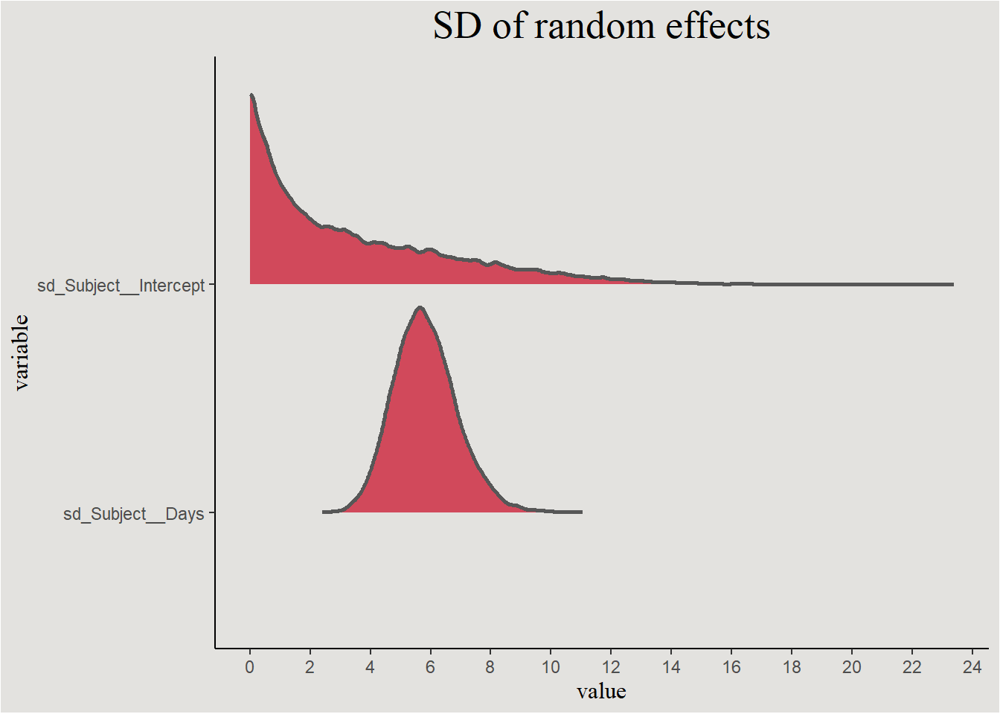
These are actually the error terms of the random effects. We saw that they should be correlated:
posterior_sleep |>
ggplot(aes(x = cor_Subject__Intercept__Days, fill = after_stat(x < 0))) +
stat_halfeye() +
geom_vline(xintercept = 0, linetype = "dashed") +
scale_fill_manual(values = c("#d1495b", "#00798c"), labels = c("Negative", "Positive")) +
scale_x_continuous(breaks = seq(-1, 1, 0.25), labels = seq(-1, 1, 0.25)) +
labs(title = "Correlation between random effects", fill = "Direction of Correlation", y = NULL, x = expression(r)) +
blog_theme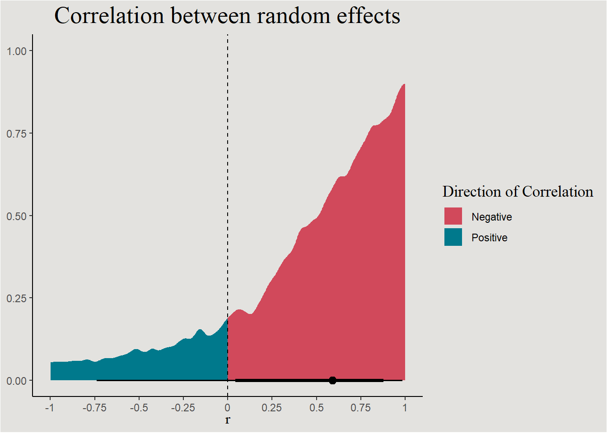
p_direction(bayes_model_sleep, effects = "random", parameters = "cor*")Probability of Direction SD/Cor: Subject
Parameter | pd
-------------------------
Intercept ~ Days | 84.40%The line
Generating an empty design matrix:
new_data_sleep <- expand_grid(Subject = factor(unique(sleep$Subject)),
Days = c(0:9)) |>
add_linpred_draws(bayes_model_sleep, ndraws = 45, seed = 14)new_data_sleep |>
ggplot(aes(x = Days, y = .linpred)) +
stat_lineribbon(.width = c(0.80, 0.85, 0.97), alpha = 0.7) +
geom_point(data = sleep, aes(y = Reaction), color = "#5D001E") +
scale_fill_manual(values = c("#edae49", "#d1495b", "#00798c")) +
scale_color_manual(values = c("#edae49", "#d1495b", "#00798c")) +
scale_x_continuous(breaks = c(0:9), labels = c(0:9)) +
scale_y_continuous(breaks = seq(200, 600, 50), labels = seq(200, 600, 50)) +
labs(y = expression(mu), fill = "% Credible Interval", title = "80%, 85% and 97% Credible Intervals") +
guides(color = "none") +
blog_theme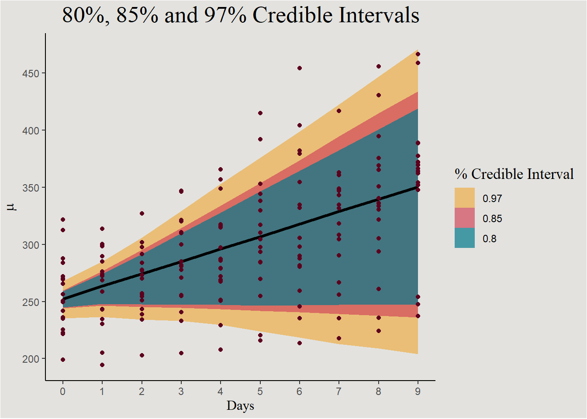
Individual lines:
new_data_sleep |>
ggplot(aes(x = Days, y = .linpred, group = interaction(.draw, Subject))) +
geom_line(color = "#d1495b") +
geom_point(data = sleep, aes(x = Days, y = Reaction, group = Subject), inherit.aes = F, color = "#5D001E") +
scale_x_continuous(breaks = c(0:9), labels = c(0:9)) +
scale_y_continuous(breaks = seq(200, 600, 50), labels = seq(200, 600, 50)) +
labs(y = "Reaction Time (ms)") +
guides(color = "none") +
blog_theme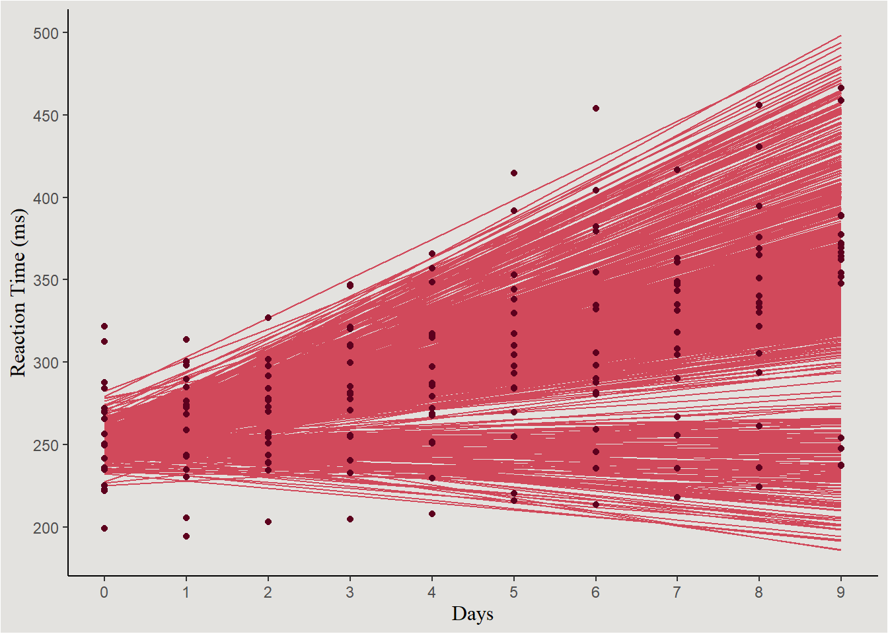
Faceting by Subject
new_data_sleep |>
ggplot(aes(x = Days, y = .linpred)) +
stat_lineribbon(.width = c(0.80, 0.85, 0.99), alpha = 0.7) +
geom_point(data = sleep, aes(y = Reaction)) +
facet_wrap(~Subject) +
scale_fill_manual(values = c("#edae49", "#d1495b", "#00798c")) +
scale_color_manual(values = c("#edae49", "#d1495b", "#00798c")) +
scale_x_continuous(breaks = c(0:9), labels = c(0:9)) +
scale_y_continuous(breaks = seq(200, 600, 100), labels = seq(200, 600, 100)) +
labs(y = expression(mu), fill = "% Credible Interval", title = "80%, 85% and 99% Credible Intervals") +
guides(color = "none") +
blog_theme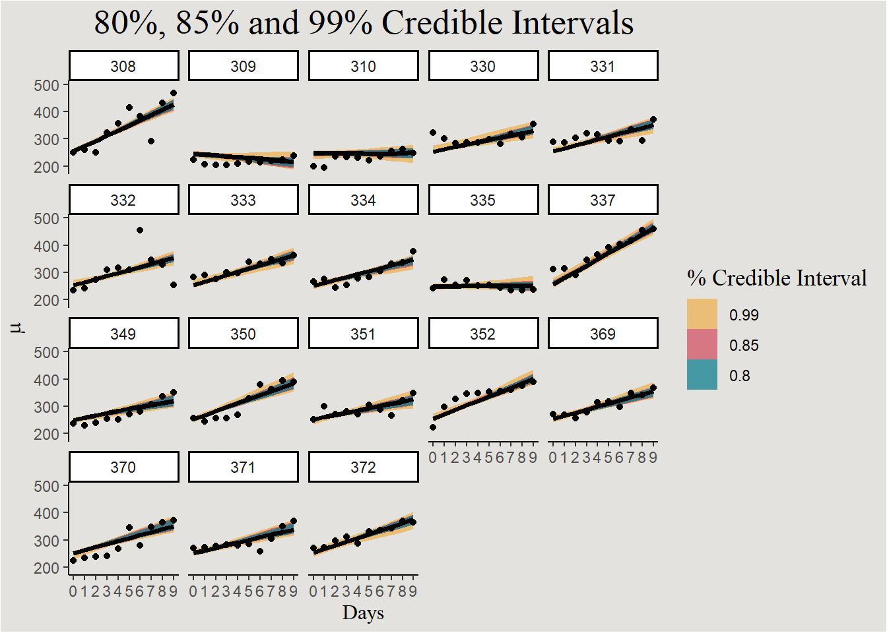
Individual lines:
new_data_sleep |>
ggplot(aes(x = Days, y = .linpred, group = .draw)) +
geom_line(color = "#d1495b") +
geom_point(data = sleep, aes(x = Days, y = Reaction), color = "#5D001E", inherit.aes = F) +
scale_x_continuous(breaks = c(0:9), labels = c(0:9)) +
scale_y_continuous(breaks = seq(200, 600, 100), labels = seq(200, 600, 100)) +
labs(y = "Reation Time (ms)") +
facet_wrap(~Subject) +
blog_theme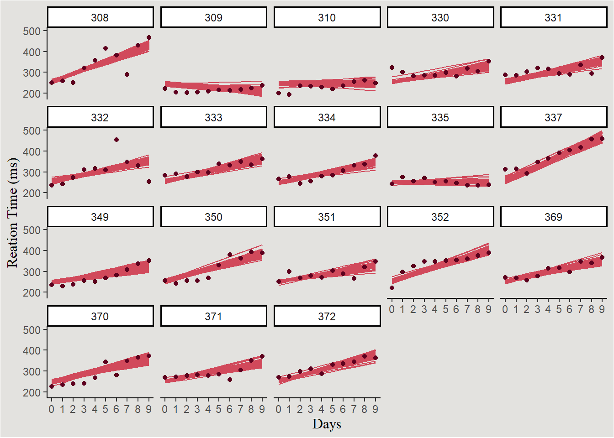
Another way of visualizing the uncertainty in Mixed effects models is:
new_data_sleep |>
ggplot(aes(x = Days, y = .linpred, group = interaction(.draw, Subject))) +
geom_line(aes(color = Subject)) +
geom_point(data = sleep, aes(x = Days, y = Reaction, group = Subject), inherit.aes = F, color = "#5D001E") +
scale_x_continuous(breaks = c(0:9), labels = c(0:9)) +
scale_y_continuous(breaks = seq(200, 600, 100), labels = seq(200, 600, 100)) +
scale_color_brewer(type = "div", palette = 9) +
labs(y = "Reaction Time (ms)", title = "Subjects represented with colors") +
guides(color = "none") +
blog_theme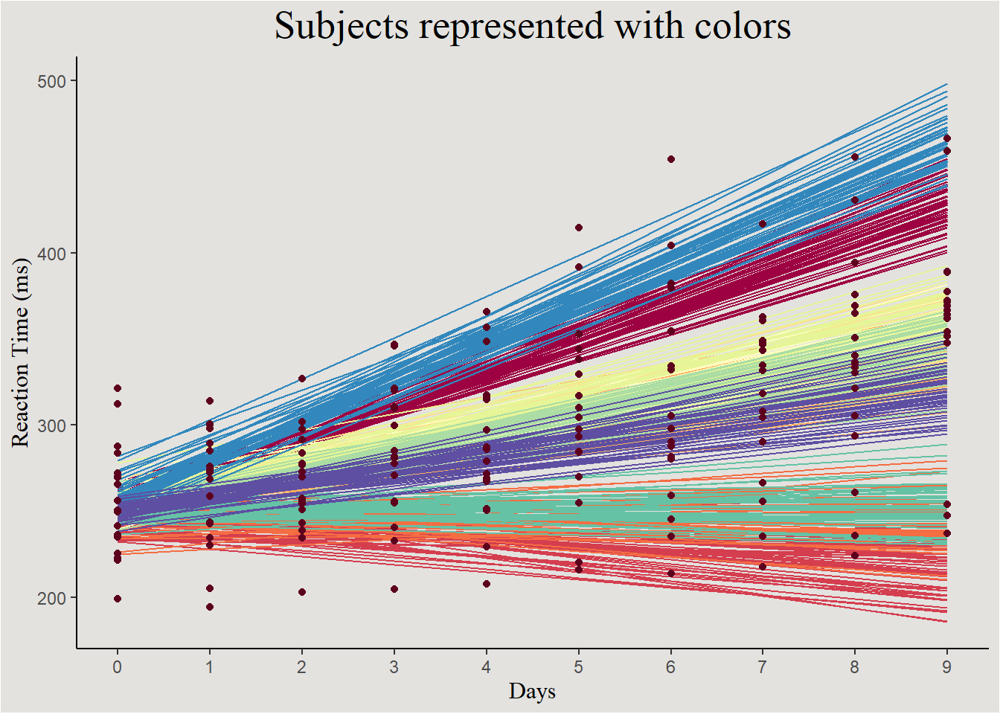
In this kind of plot we can also observe the random effects: low variability in intercepts + moderate variability in slopes.
Generalized Linear Models (GLMs)
Not-so-professional intro to GLMs
Likelihood Function
Often, our interesting research questions demand yet more complex models. Recall that ordinary regression model assumes that the dependent variable \(y\) is following a normal distribution with conditional mean \(\beta_0+\beta_1 x_1+...+\beta_n x_n\) and variance \(\sigma^2\). Generalized linear models can assume other distributions for the outcome variable \(y\), for example: if our outcome is binary we can assume it follows a Bernoulli distribution: \(y \sim Bernoulli(p)\). In this kind of model the parameter that is modeled is \(p\).
In part 1 we called this the assumption of a Data Generating Process (DGP).
Link Function
Sometimes modeling other parameters creates other complexities: for example: the parameter \(p\) is a probability, strictly bounded in \([0;1]\), but the linear predictor \(\beta_0+\beta_1 x_1+...+\beta_n x_n\) should be allowed to be any value in \([-\infty;+\infty]\). Somehow, the parameter \(p\) should be mapped from it’s \([0;1]\) interval to the \([-\infty;+\infty]\) interval. This is done with a Link Function:
\[
f(p)=\beta_0+\beta_1 x_1+...+\beta_n x_n
\]
For Bernoulli models this link function if often the logit function: \(logit(p)=ln(\frac{p}{1-p})\) - giving Logistic regression it’s name.
The term \(f(p)\) is often not easy or intuitive for interpretation, so the equation will be back-transformed1:
\[ \frac{p}{1-p} =e^{(\beta_0+\beta_1 x_1+...+\beta_n x_n)}=e^{\beta_0} \cdot e^{\beta_1x_1} \cdot... \cdot e^{\beta_nx_n} \]
Logistic Regression
We will use the Smarket dataset from the package ISLR containing information about daily percentage returns for the S&P500 index between 2001-2005.
data <- ISLR::Smarket
head(data) Year Lag1 Lag2 Lag3 Lag4 Lag5 Volume Today Direction
1 2001 0.381 -0.192 -2.624 -1.055 5.010 1.1913 0.959 Up
2 2001 0.959 0.381 -0.192 -2.624 -1.055 1.2965 1.032 Up
3 2001 1.032 0.959 0.381 -0.192 -2.624 1.4112 -0.623 Down
4 2001 -0.623 1.032 0.959 0.381 -0.192 1.2760 0.614 Up
5 2001 0.614 -0.623 1.032 0.959 0.381 1.2057 0.213 Up
6 2001 0.213 0.614 -0.623 1.032 0.959 1.3491 1.392 UpMaximum Likelihood Estimation
Predicting the direction of change Direction from returns the previous day Lag1:
sp500 <- data |>
mutate(Direction = factor(Direction, levels = c("Down", "Up")),
Lag1 = scale(Lag1, scale = F)[,1])
logistic_model <- glm(Direction ~ Lag1,
data = sp500,
family = binomial(link = "logit")) # 'binomial' is the DGP/likelihood function, 'link' is the link functionmodel_parameters(logistic_model) |> insight::print_html()| Parameter | Coefficient | SE | 95% CI | z | p |
|---|---|---|---|---|---|
| (Intercept) | 0.07 | 0.06 | (-0.04, 0.18) | 1.30 | 0.193 |
| Lag1 | -0.07 | 0.05 | (-0.17, 0.03) | -1.40 | 0.160 |
Back-transforming the parameters gives:
model_parameters(logistic_model, exponentiate = T) |> insight::print_html()| Parameter | Coefficient | SE | 95% CI | z | p |
|---|---|---|---|---|---|
| (Intercept) | 1.08 | 0.06 | (0.96, 1.20) | 1.30 | 0.193 |
| Lag1 | 0.93 | 0.05 | (0.84, 1.03) | -1.40 | 0.160 |
And this is the logit function fitted to the data, the negative relationship between Lag1 and market direction today can be seen:
new_data_sp500 <- expand_grid(Lag1 = seq(-100, 100, 0.1))
new_data_sp500$prob <- predict(logistic_model, new_data_sp500, type = "response")
new_data_sp500 |>
ggplot(aes(x = Lag1, y = prob)) +
geom_smooth(method = "glm", method.args = list(family = "binomial"),
color = "#5D001E") +
scale_x_continuous(breaks = seq(-100, 100, 10), labels = seq(-100, 100, 10)) +
labs(x = "Market return yesterday (%)", y = "Predicted Probability", title = "Predicted probability of market going Up today") +
blog_theme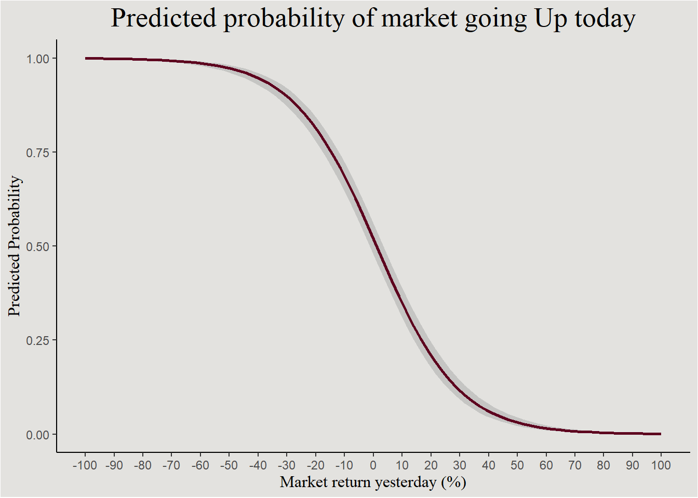
When the market doesn’t change - \(Lag1=0\), the probability of the market going Up is \(1.08\) greater then the probability of it going down. The market tends to go up!
And, for an increase in one unit of Lag1, the odds ratio \(\frac {p(Direction=Up)}{p(Direction=Down)}\) decreases by a factor of \(0.93\). Let’s estimate the posterior!
Bayesian Estimation
Prior elicitation
Thinking about the priors in a model with a link function can be tricky. So we will define them on the response level (in this case: odds ratio), and transform them to the link level (logit).
get_prior(Direction ~ Lag1,
data = sp500,
family = bernoulli(link = "logit")) prior class coef group resp dpar nlpar lb ub source
(flat) b default
(flat) b Lag1 (vectorized)
student_t(3, 0, 2.5) Intercept defaultLet’s guess that a positive return yesterday predicts a positive return today. Meaning a coefficient greater then \(1\) for Lag1. If the odds ratio is greater then \(1\), the log-odds ratio is greater then \(ln(1)=0\). Furthermore, the overall direction of the stock market is positive, therefore the intercept should also be greater then \(1\). We define a normal marginal prior with \(\mu=1; \sigma=3\) for each parameter:
prior_sp500 <- set_prior("normal(1, 3)", coef = "Lag1") +
set_prior("normal(1, 3)", class = "Intercept")Let’s fit!
bayes_model_sp500 <- brm(Direction ~ Lag1,
data = sp500,
family = bernoulli(link = "logit"),
prior = prior_sp500,
iter = 2000,
backend = "cmdstanr")model_parameters(bayes_model_sp500, exponentiate = T, centrality = "all") |> insight::print_html()| Model Summary | |||||||
|---|---|---|---|---|---|---|---|
| Parameter | Median | Mean | MAP | 95% CI | pd | Rhat | ESS |
| (Intercept) | 1.08 | 1.08 | 1.08 | (0.96, 1.20) | 89.72% | 1.000 | 3739.00 |
| Lag1 | 0.93 | 0.93 | 0.93 | (0.85, 1.03) | 91.92% | 0.999 | 3351.00 |
Convergence measures looking good and the parameter estimations are very similar to the Maximum Likelihood (frequentist) estimations.
The parameters themselves
chains_logistic <- spread_draws(bayes_model_sp500, b_Intercept, b_Lag1) |>
mutate(across(c(b_Intercept, b_Lag1), exp)) # transforming the distributions
chains_logistic |>
ggplot(aes(x = b_Intercept, fill = after_stat(x < 1))) +
stat_slab(color = "gray34") +
scale_fill_manual(values = c("#00798c", "#d1495b"), labels = c("Positive", "Negative")) +
geom_vline(xintercept = 1, linetype = "dashed") +
labs(x = "Intercept", y = NULL, fill = "Direction of effect") +
blog_theme
chains_logistic |>
ggplot(aes(x = b_Lag1, fill = after_stat(x < 1))) +
stat_slab(color = "gray34") +
scale_fill_manual(values = c("#00798c", "#d1495b"), labels = c("Positive", "Negative")) +
geom_vline(xintercept = 1, linetype = "dashed") +
labs(x = "Lag1", y = NULL, fill = "Direction of effect") +
blog_theme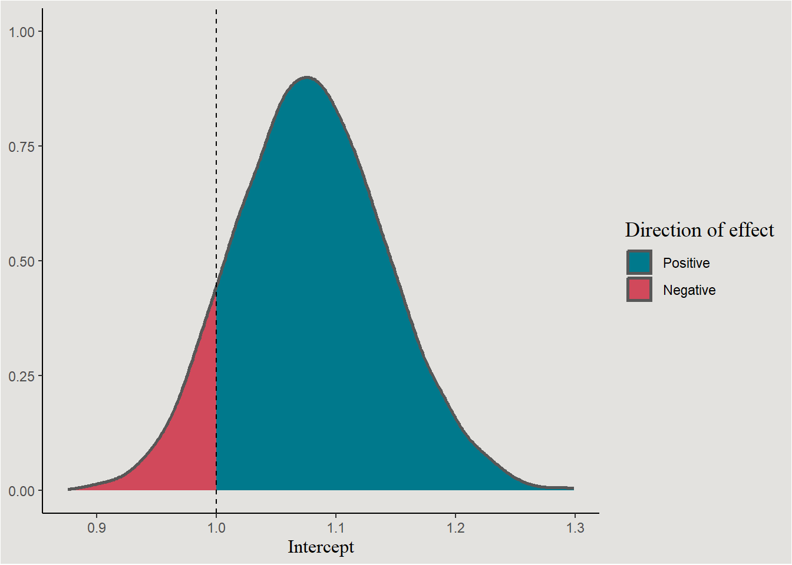
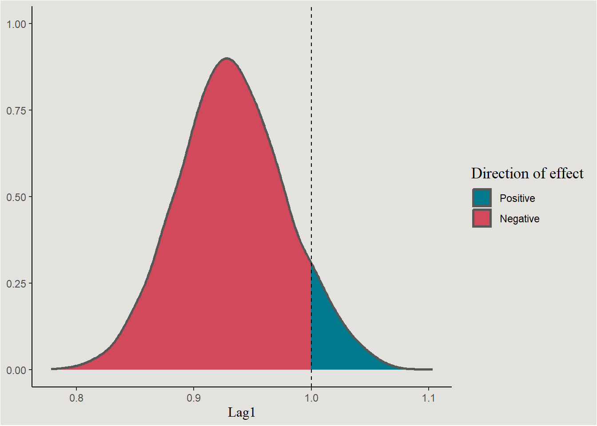
The line
new_data_sp500 |>
add_linpred_draws(bayes_model_sp500, ndraws = 40, seed = 140) |>
mutate(.linpred = exp(.linpred) / (1 + exp(.linpred))) |>
ggplot(aes(x = Lag1, y = .linpred)) +
stat_lineribbon(.width = c(0.80, 0.85, 0.90), alpha = 0.7) +
scale_x_continuous(breaks = seq(-100, 100, 20), labels = seq(-100, 100, 20)) +
scale_y_continuous(breaks = seq(0, 1, 0.1), labels = seq(0, 1, 0.1)) +
scale_fill_brewer() +
labs(y = "Probability of market going Up", x = "Market return yesterday", fill = "Credible Interval %") +
blog_theme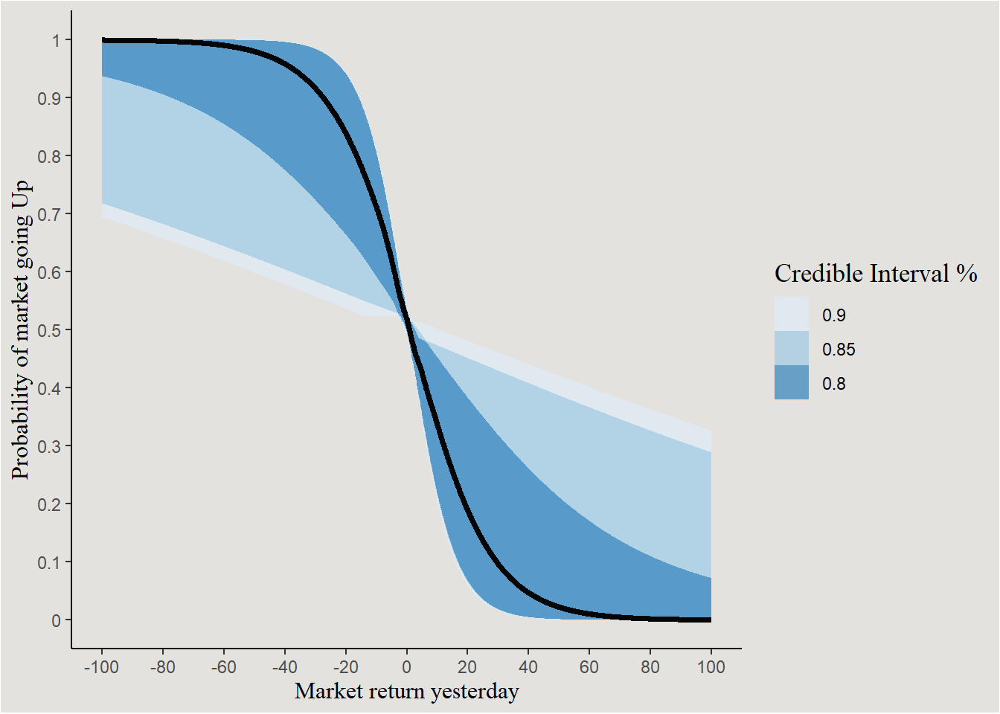
We will now use the tidybayes::add_epred_draws() function in order to extract (40) individual predictions from the posterior distribution.
predicted_direction <- add_epred_draws(newdata = new_data_sp500, object = bayes_model_sp500, ndraws = 40, seed = 140)
predicted_direction |>
mutate(.draw = factor(.draw)) |>
ggplot(aes(x = Lag1, y = .epred, group = .draw)) +
geom_line(color = "#d1495b") +
scale_x_continuous(breaks = seq(-100, 100, 10), labels = seq(-100, 100, 10)) +
labs(color = NULL, fill = NULL, x = "Market return yesterday (%)", y = "Predicted Probability", title = "Posterior Predicted probability of market going Up") +
guides(color = "none", fill = "none") +
blog_theme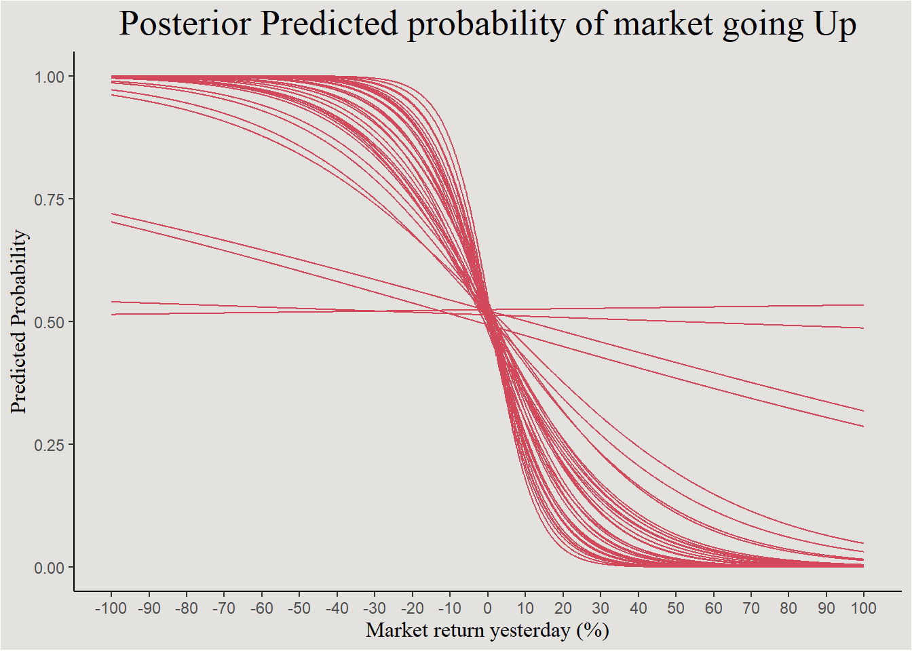
The negative relationship is seen again, with a few odd outlier trends.
Poisson Regression - GLMer
For the final example, we’ll look at a Generalized Linear Mixed effects model. That is a GLM with a hierarchical structure. Let’s look at the epilepsy dataset from brms.
epilepsy <- epilepsy
head(epilepsy) Age Base Trt patient visit count obs zAge zBase
1 31 11 0 1 1 5 1 0.4249950 -0.7571728
2 30 11 0 2 1 3 2 0.2652835 -0.7571728
3 25 6 0 3 1 2 3 -0.5332740 -0.9444033
4 36 8 0 4 1 4 4 1.2235525 -0.8695111
5 22 66 0 5 1 7 5 -1.0124085 1.3023626
6 29 27 0 6 1 5 6 0.1055720 -0.1580352The dataset contains information about patients in a randomized study for epilepsy treatment. Each patient’s number of seizures was recorded 4 times during a 8-week period. We will try to predict the number of seizures from session number (should decrease overtime), and the experimental group (0 = control, 1 = Treatment).
Because the response variable in this case is the count of seizures, we will fit a Poisson model. In this model the estimated parameter is the rate of the Poisson process - \(\lambda\).
epilepsy |>
ggplot(aes(x = count)) +
geom_histogram(bins = 50, color = "gray30", fill = "#d1495b") +
labs(x = "Number of seizures", y = "Count", title = "Looks Poisson-ish") +
scale_x_continuous(breaks = seq(0, 100, 10), labels = seq(0, 100, 10)) +
blog_theme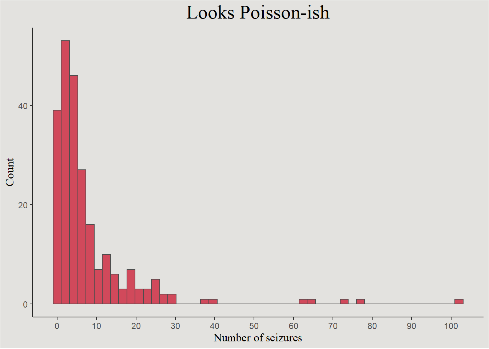
The model
Because the rate of the Poisson process is strictly positive, the \(log\) link function is used.
We start by assuming that number of seizures is Poisson distributed:
\[ Count \sim Poisson(\lambda) \]
Level 1: The (log)rate of seizures for patient \(i\) in trial \(j\) is:
\[ ln(\lambda_{ij})=\beta_0+\beta_1 \cdot Session \]
Level 2:
\[ \beta_{0i}=\gamma_{00}+\gamma_{01} \cdot Treatment_i + \tau_{0i} \]
\[ \beta_{1i}=\gamma_{10}+\gamma_{11} \cdot Treatment_i + \tau_{1i} \]
\[ \begin{bmatrix} \beta_0 \cr \beta_1 \end{bmatrix} \sim MVN(\begin{bmatrix} \gamma_{00} \cr \gamma_{10} \end{bmatrix},\begin{bmatrix} \tau_0^2 & \tau_0\tau_1\rho_{01} \cr \tau_1\tau_0\rho_{01} & \tau_1^2 \end{bmatrix}) \]
And \(\rho_{01}\) is the correlation coefficient between random intercepts and slopes.
Maximum Likelihood Estimation
pois_model_freq <- glmer(count ~ visit * Trt + (visit | patient),
data = epilepsy,
family = poisson(link = "log"))sjPlot::tab_model(pois_model_freq, transform = "exp")| count | |||
|---|---|---|---|
| Predictors | Incidence Rate Ratios | CI | p |
| (Intercept) | 6.46 | 4.23 – 9.87 | <0.001 |
| visit | 0.96 | 0.87 – 1.05 | 0.331 |
| Trt [1] | 0.78 | 0.43 – 1.39 | 0.398 |
| visit × Trt [1] | 0.99 | 0.87 – 1.12 | 0.836 |
| Random Effects | |||
| σ2 | 0.19 | ||
| τ00 patient | 1.03 | ||
| τ11 patient.visit | 0.02 | ||
| ρ01 patient | -0.39 | ||
| ICC | 0.83 | ||
| N patient | 59 | ||
| Observations | 236 | ||
| Marginal R2 / Conditional R2 | 0.021 / 0.833 | ||
Bayesian Estimation
get_prior(formula = count ~ visit * Trt + (visit | patient),
data = epilepsy,
family = poisson(link = "log")) prior class coef group resp dpar nlpar lb ub
(flat) b
(flat) b Trt1
(flat) b visit
(flat) b visit:Trt1
lkj(1) cor
lkj(1) cor patient
student_t(3, 1.4, 2.5) Intercept
student_t(3, 0, 2.5) sd 0
student_t(3, 0, 2.5) sd patient 0
student_t(3, 0, 2.5) sd Intercept patient 0
student_t(3, 0, 2.5) sd visit patient 0
source
default
(vectorized)
(vectorized)
(vectorized)
default
(vectorized)
default
default
(vectorized)
(vectorized)
(vectorized)Prior elicitation
We assume that seizure rate will decrease as the study progresses (negative effect of visit). We can also assume that this decrease will be greater for patients in the treatment group - a cross-levels interaction effect.
If each increase of one-unit in visit lead to a decrease of 90% in seizure count - \(\beta_{visit}=ln(0.9)=-0.11\). And if this effect will be 90% smaller in the treatment group then - \(\beta_{visitXtreatment}=ln(0.9)=-0.11\).
prior_epilepsy <- set_prior("normal(-0.11, 3)", coef = "visit") +
set_prior("normal(-0.11,3)", coef = "visit:Trt1") +
set_prior("exponential(1)", class = "sd") # setting prior on random effects' varianceModel estimation
bayes_model_epilepsy <- brm(formula = count ~ visit * Trt + (visit | patient),
data = epilepsy,
family = poisson(link = "log"),
prior = prior_epilepsy,
chains = 4,
cores = 4,
iter = 3000,
backend = "cmdstanr")model_parameters(bayes_model_epilepsy, exponentiate = T, centrality = "all", effects = "all") |> insight::print_html()| Model Summary | |||||||
|---|---|---|---|---|---|---|---|
| Parameter | Median | Mean | MAP | 95% CI | pd | Rhat | ESS |
| Fixed Effects | |||||||
| (Intercept) | 6.50 | 6.48 | 6.58 | (4.17, 9.91) | 100% | 1.002 | 1473.00 |
| visit | 0.95 | 0.95 | 0.95 | (0.87, 1.04) | 84.00% | 1.001 | 3563.00 |
| Trt1 | 0.78 | 0.78 | 0.79 | (0.42, 1.47) | 79.17% | 1.002 | 1461.00 |
| visit:Trt1 | 0.99 | 0.98 | 0.99 | (0.87, 1.12) | 59.13% | 1.000 | 3207.00 |
| Random Effects | |||||||
| SD (Intercept: patient) | 2.83 | 2.86 | 2.79 | (2.31, 3.79) | 100% | 1.000 | 2415.00 |
| SD (visit: patient) | 1.17 | 1.17 | 1.16 | (1.10, 1.26) | 100% | 1.001 | 2123.00 |
| Cor (Intercept~visit: patient) | 0.70 | 0.71 | 0.68 | (0.52, 1.06) | 95.60% | 1.000 | 3899.00 |
The parameters themselves
posterior_epilepsy <- spread_draws(bayes_model_epilepsy, b_Intercept, b_visit, b_Trt1, !!sym("b_visit:Trt1"), sd_patient__Intercept, sd_patient__visit, cor_patient__Intercept__visit) |>
mutate(across(contains("b_"), exp)) # back-transforming the regression coefficientsRegression coefficients
posterior_epilepsy |>
ggplot(aes(x = b_Intercept, fill = "#d1495b")) +
stat_slab(color = "gray34") +
guides(color = "none", fill = "none") +
labs(title = "Intercept", y = NULL, x = NULL) +
scale_x_continuous(breaks = seq(0, 15, 1), labels = seq(0, 15, 1)) +
blog_theme +
theme(axis.text.y = element_blank(),
axis.ticks.y = element_blank())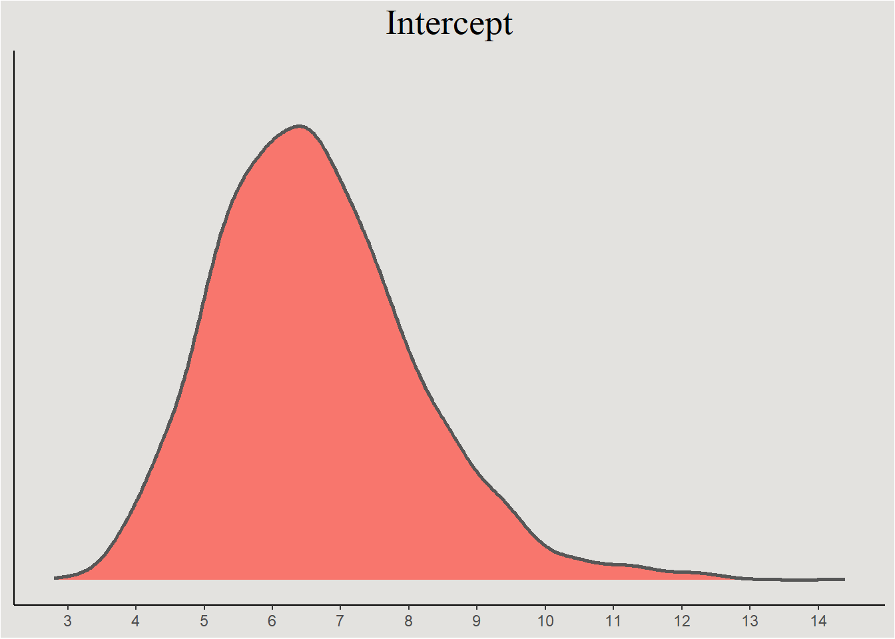
posterior_epilepsy |>
select(.draw, b_visit, b_Trt1, b_visitXTrt1 = !!sym("b_visit:Trt1")) |>
pivot_longer(cols = !.draw,
names_to = "variable") |>
ggplot(aes(x = value, y = variable, fill = after_stat(x > 1))) +
stat_slab(color = "gray34") +
geom_vline(xintercept = 1, linetype = "dashed") +
guides(color = "none") +
scale_fill_manual(values = c("#d1495b", "#00798c"), labels = c("Negative", "Positive")) +
scale_x_continuous(breaks = seq(0, 3, 0.25), labels = seq(0, 3, 0.25)) +
labs(title = "Regression coefficients", y = NULL, x = "Change in rate of seizures", fill = "Direction of effect") +
blog_theme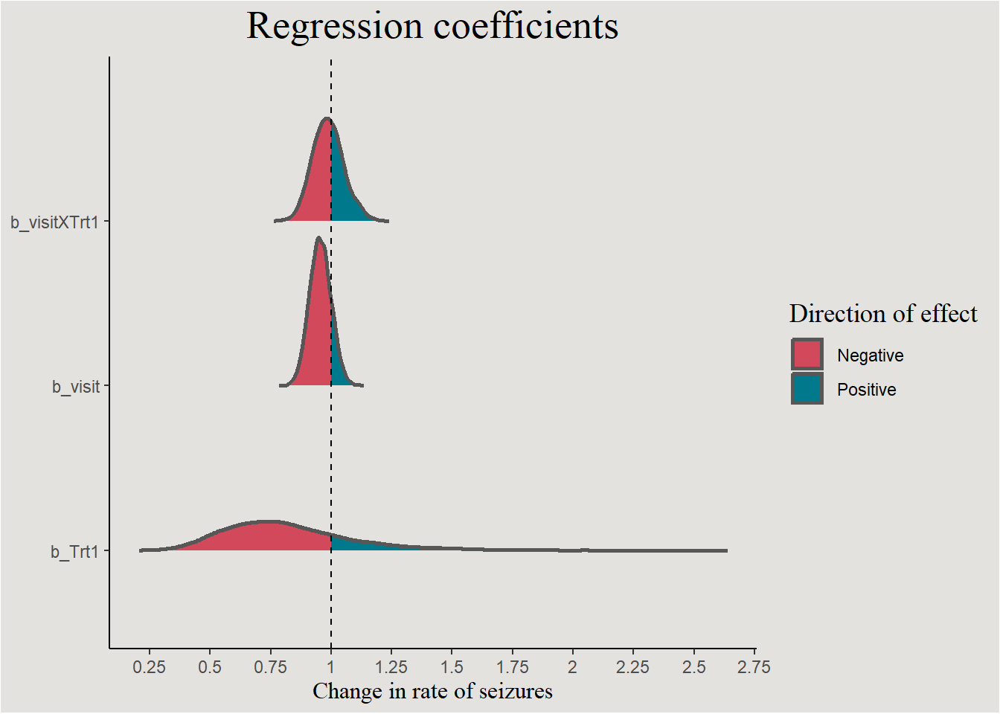
p_direction(bayes_model_epilepsy, parameters = "b_")Probability of Direction
Parameter | pd
--------------------
(Intercept) | 100%
visit | 84.00%
Trt1 | 79.17%
visit:Trt1 | 59.13%Random effects variances
posterior_epilepsy |>
select(.draw, sd_patient__Intercept, sd_patient__visit) |>
pivot_longer(cols = !.draw,
names_to = "variable") |>
ggplot(aes(x = value, y = variable, fill = "#d1495b")) +
stat_slab(color = "gray34") +
guides(color = "none", fill = "none") +
scale_x_continuous(breaks = seq(0, 2, 0.25), labels = seq(0, 2, 0.25)) +
labs(title = "Random effects variances", y = NULL, x = "SD") +
blog_theme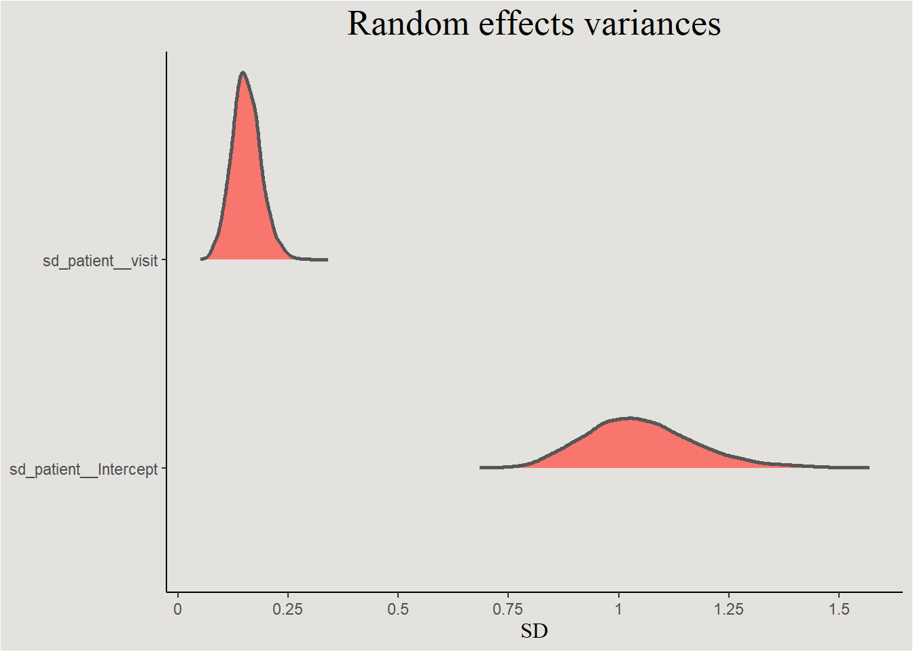
posterior_epilepsy |>
ggplot(aes(x = cor_patient__Intercept__visit, fill = after_stat(x > 0))) +
stat_slab(color = "gray34") +
geom_vline(xintercept = 0, linetype = "dashed") +
guides(color = "none") +
scale_fill_manual(values = c("#d1495b", "#00798c"), labels = c("Negative", "Positive")) +
scale_x_continuous(breaks = seq(-1, 1, 0.2), labels = seq(-1, 1, 0.2)) +
labs(title = "Correlation between random effects", y = NULL, x = expression(r), fill = "Direction of correlation") +
blog_theme +
theme(axis.text.y = element_blank(),
axis.ticks.y = element_blank())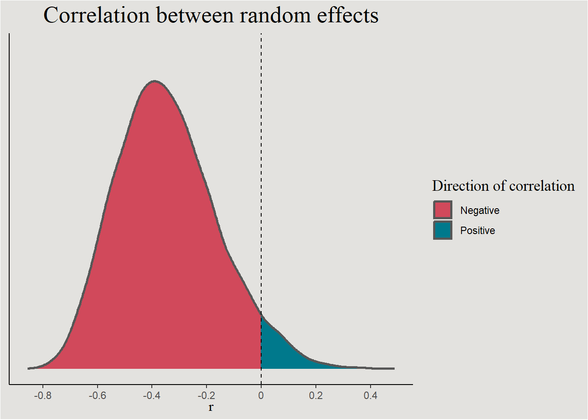
p_direction(bayes_model_epilepsy, effects = "random", parameters = "cor*")Probability of Direction SD/Cor: patient
Parameter | pd
--------------------------
Intercept ~ visit | 95.60%The regression line
new_data_epilepsy <- epilepsy |>
select(patient, Trt, visit) |>
distinct() |>
add_epred_draws(bayes_model_epilepsy, ndraws = 40, seed = 14)Creating a 59-color & 14-color palettes
P59 <- Polychrome::createPalette(59, c("#543005", "#F5F5F5", "#003C30"), range = c(30, 80))
names(P59) <- NULL
P14 <- Polychrome::createPalette(14, c("#543005", "#F5F5F5", "#003C30"), range = c(30, 80))
names(P14) <- NULLLooking at the posterior predicted count of seizures (coloring by patient):
new_data_epilepsy |>
mutate(Trt = case_when(Trt == 0 ~ "Control",
Trt == 1 ~ "Treatment",
.default = NA)) |>
ggplot(aes(x = visit, y = .epred, color = patient, group = interaction(patient, .draw))) +
geom_line(show.legend = FALSE) +
scale_color_manual(values = P59) +
guides(color = "none") +
labs(y = "Predicted count of seizures", x = "Visit") +
scale_y_continuous(breaks = seq(0, 100, 10), labels = seq(0, 100, 10)) +
facet_wrap(~Trt) +
blog_theme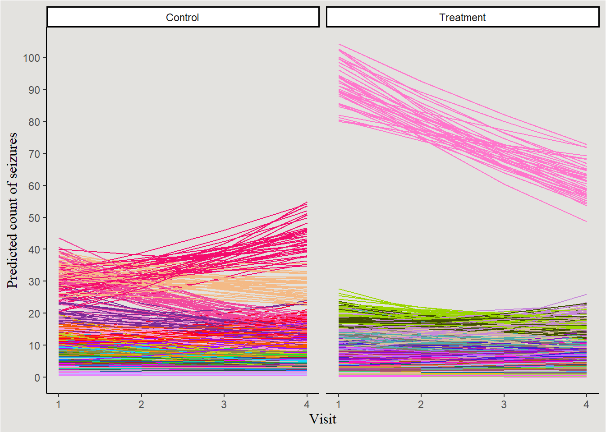
Kinda messy… let’s choose 14 random patients and plot them:
set.seed(14)
treatment_patients <- sample(unique(epilepsy$patient[epilepsy$Trt==1]), size = 7, replace = F)
control_patients <- sample(unique(epilepsy$patient[epilepsy$Trt==0]), size = 7, replace = F)
new_data_epilepsy |>
filter(patient %in% c(treatment_patients, control_patients)) |>
mutate(Trt = case_when(Trt == 0 ~ "Control",
Trt == 1 ~ "Treatment",
.default = NA)) |>
ggplot(aes(x = visit, y = .epred, color = patient, group = interaction(patient, .draw))) +
geom_line(show.legend = FALSE) +
scale_color_manual(values = P14) +
guides(color = "none") +
labs(y = "Predicted count of seizures", x = "Visit") +
scale_y_continuous(breaks = seq(0, 100, 10), labels = seq(0, 100, 10)) +
facet_wrap(~Trt) +
blog_theme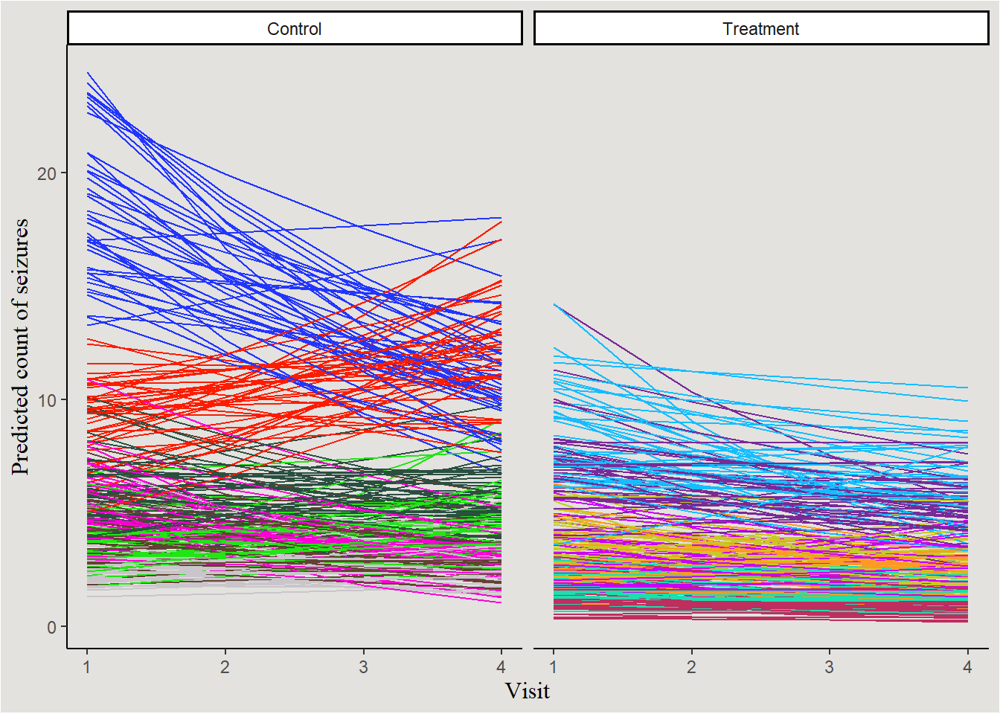
The slight overall decrease in seizure count can be seen, as well as the not-so-interesting main effect of Treatment. No visually significant interaction. Random variability in slopes of visit and intercept is also visible.
Conclusion
In this post I covered the types of statistical models most popular in Psychology research today, and the Bayesian way of fitting them. Together with part 1, these posts should help you include Bayesian models in your research, and make your results more robust, interesting, and ✨ pretty ✨
The next (and last?) part will be shorter and cover yet more advanced things like model performance, model comparison, prior predictive distributions and more.
References
Kay, Matthew. 2020. “Tidybayes: Tidy Data and Geoms for Bayesian Models.” R Package Version 2 (1): 1.
Footnotes
Logistic regression parameters are usually interpreted on the odds ratio of \(p\) instead of \(p\) itself.↩︎